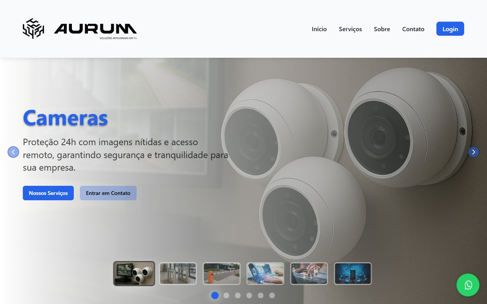
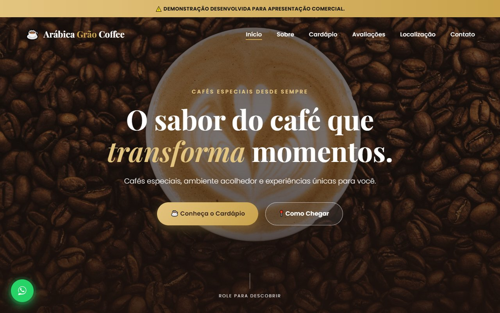
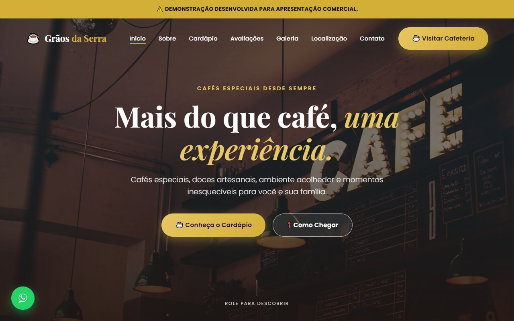
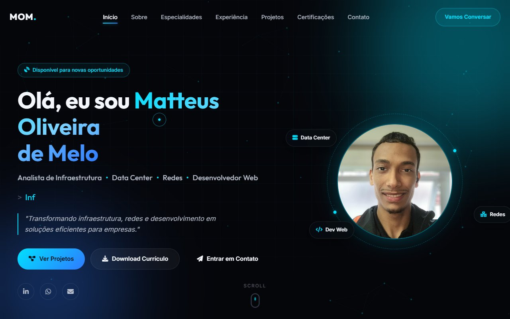

AURUM Soluções Integradas
Site institucional full-stack da AURUM: apresentação de serviços (câmeras, redes, infraestrutura), carrossel de destaques e área de login autenticada.
Carregando experiência
"Transformando infraestrutura, redes e desenvolvimento em soluções eficientes para empresas."
Sou Matteus Oliveira de Melo, profissional de TI com atuação em Infraestrutura, Redes e Desenvolvimento Web. Atualmente trabalho como Técnico de Cabeamento Jr. no Grupo ARION, em projetos de cabeamento estruturado, fibra óptica e telecomunicações para ambientes corporativos — e curso Análise e Desenvolvimento de Sistemas pela Anhanguera.
Unindo vivência prática em campo com lógica de programação, gosto de aprender novas tecnologias e transformar problemas complexos em soluções eficientes.
"Gosto de aprender novas tecnologias, resolver problemas complexos e criar soluções eficientes."
Da infraestrutura física à camada de software, atuando em toda a cadeia de tecnologia.
Projeto, instalação e manutenção de redes corporativas.
Operação e monitoramento de ambientes críticos.
Diagnóstico e resolução de incidentes de hardware e software.
Certificação e organização de infraestrutura de cabeamento.
Fusão, lançamento e testes de enlaces ópticos.
Instalações elétricas seguras para ambientes de TI.
Criação de sites e sistemas modernos e responsivos.
Estruturação semântica de páginas web.
Estilização moderna, responsiva e animada.
Interatividade e lógica no front-end.
Automação de processos e scripts utilitários.
Uso de Inteligência Artificial aplicada ao ciclo de desenvolvimento.
Experiência profissional construída entre infraestrutura, data centers e desenvolvimento.
Uma seleção de trabalhos entre desenvolvimento web, automação e infraestrutura.

Site institucional full-stack da AURUM: apresentação de serviços (câmeras, redes, infraestrutura), carrossel de destaques e área de login autenticada.
Landing page para provedora de internet fibra óptica: planos, estatísticas de credibilidade, contato via WhatsApp e formulário de assinatura.

Site institucional para cafeteria: cardápio, galeria, avaliações de clientes e localização, com design elegante e totalmente responsivo.

Site institucional para cafeteria: cardápio, galeria, avaliações de clientes e localização, com design elegante e totalmente responsivo.

Documentação, monitoramento e operação de ambientes críticos de Data Center.
Ver no GitHubEquipamento de Proteção Individual
Segurança em Máquinas e Equipamentos
Espaços Confinados
Trabalho em Altura
Aberto a oportunidades em infraestrutura, redes, data center e desenvolvimento web.